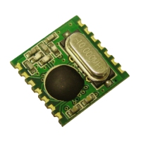
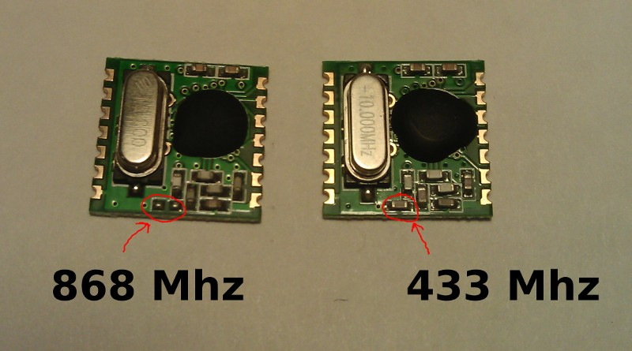

To see how RFM12B wireless compares to other similar wireless options (e.g Xbee, XRF etc..) check out this well compiled comparison overview by Stuart Poulton: http://blog.homelabs.org.uk/wireless-connectivity/.
Made by Hope RF, re-branded by RFsolutions in the UK. Sometimes called 'Alpha RF'
Low cost RF transceiver (from Rapid, Farnell, or RS in the UK)
Up to 300m range
Up to 115Kbps bit rate
Up to 30 nodes per network*
Up to 250 different network groups
3 ISM band frequencies: 433MHz (worldwide), 868MHz (Europe), 915MHz (USA & Australia only) . Note: The module's operating frequency is set in software. For best performance, the frequency chosen should match the module's design frequency.
*node ID's can be 0-31 with 1-30 used for normal operation.
ID 31 is special, as it can communicate with nodes on any network. ID 0 is reserved for OOK operation.
SPI interface
2.2-3.8V supply voltage
Low power – 0.3µA standby current
Datasheet: http://www.hoperf.com/pro/rf/cob/RFM12B.htm
Includes additional capacitor = 433 MHz
Missing capactior = 868 MHz

433 1/4 wave = 164.7mm
433 1/2 wave = 329.4mm
433 full wave = 692.7mm
868 1/4 wave = 82.2mm
868 1/2 wave = 164.3mm
868 full wave = 345.5mm
915 1/4 wave = 77.9mm
915 1/2 wave = 155.9mm
915 full wave = 327.8mm

Credit to Michael Margolis from Arduino Cookbook for Arduino connection diagram.
Alternative connection diagram (only for when Atmega328 is running at 3.3V):

Code example: https://github.com/openenergymonitor/RFM12B_Simple
RFM12 Arduino library from JeeLabs: https://github.com/jcw/jeelib - credit to JCW for this great work
See this post by JCW describing the Nodes, Addresses and operation of the JeeLib RFM12 Arduino Library: http://jeelabs.org/2011/01/14/nodes-addresses-and-interference/
JeeLib library reference: http://jeelabs.net/pub/docs/jeelib/RF12_8cpp.html
Lots of information on RFM12B and the RFM12 Arduino driver library on jeelabs.org.
Here are the values of the capacitors on the RFM12B as measured:
{kind=link}